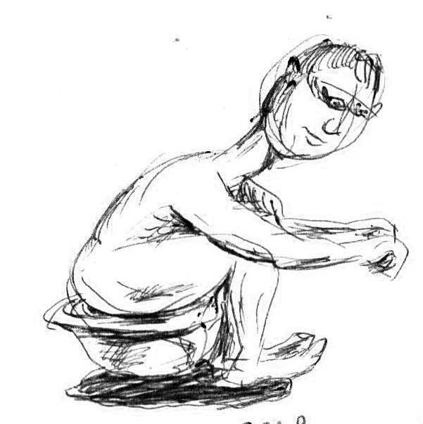

Степан Мамакин
А ВЫ НЕ БОИТЕСЬ... КАНАЛИЗАЦИОННЫХ МУХОБЯК?

Квартира пенсионера Староматрасова всегда пахла старыми газетами, молью и тушёнкой, которую он ел прямо из банки. Однокомнатная, с пожелтевшими обоями, заставленная шаткими этажерками, заваленными пыльными книгами, коллекцией зубочисток и баночками с непонятным содержимым. В углу кухни стоял вечно подтекающий чайник, а на стене висел календарь 1987 года — на память о поездке на море.
Сам Староматрасов был сухопарым, с седыми, торчащими в разные стороны волосами, носом пипочкой и глубоко посаженными глазами, которые всегда смотрели с подозрением. Особенно — в сторону туалета.
С детства его преследовал страх: жилистая, зелёная, скользкая рука, которая может вынырнуть из канализационных глубин и схватить его за мягкое место, пока он сидит на унитазе. Поэтому он никогда не засиживался там с книгой, как другие. Максимум — быстро сделать дело и бежать. А ещё он верил, что в трубах живут канализационные мухобяки — склизкие, шустрые твари, которые только и ждут момента, чтобы утащить неосторожного человека в свои сумрачные владения.
Чтобы держать их на расстоянии, Староматрасов регулярно сыпал в унитаз дуст. После этого пару дней можно было ходить в туалет без опаски. Но однажды дуст закончился, а магазины уже закрылись.
Тут, как назло, захотелось в туалет. Ой как захотелось.
Он походил по коридору, заглянул на кухню, даже попытался отвлечься, рассматривая свою коллекцию зубочисток. Но терпеть было невозможно.
— Ладно… Не больше минуты! — пробормотал он. — Ерунда же, сам всё придумал.
Осторожно присел, напряжённо вслушиваясь в тишину. Казалось, даже трубы перестали булькать. Может, и правда всё это глупости?
И тут… что-то дотронулось.
Холодное. Скользкое. Оттуда.
Староматрасов вскочил, но жилистая зелёная рука метнулась быстрее — и вцепилась. Сами знаете за что.
Соседи потом рассказывали, что слышали душераздирающие крики и странное бульканье, будто кто-то с шумом вынырнул… или, наоборот - нырнул.
Дверь в туалет опечатали. Никого не пускали.
А когда дом передали под реновацию, рабочие нашли в трубах только какую-то тряпочку с синими ромбиками и этикетку от дуста…
Степан Мамакин, 15 июня 2025 года, Мончегорск
Иллюстрация выполнена автором рассказа